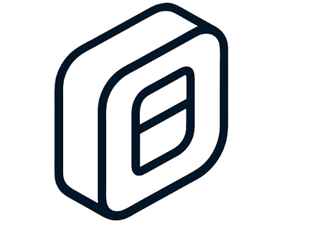

Ablauf
Input
45 min
Fragen
15 min
Hands-on
90 min
Diskussion
30 min
Bevor wir loslegen …
„Wer hat schon einmal mit KI im Browser gechattet?“
„Wer hat schon einmal eine Agent-App benutzt, etwa Claude Code, Cowork oder Design?“
„Wer hat schon einmal ein LLM lokal ausgeführt?“
„Wer weiß, was ein Mixture-of-Experts-Modell ist?“
Input
Tokens
Der schönste Stadtteil Leipzigs ist Connewitz.
Tokens sind quasi "Wörter" für LLMs
Tokenzahl ≈ Anzahl Wörter x 1,5 oder Zeichenzahl / 4
Input
Training
Pre-Training
„Grundwissen“ auf Basis sehr großer Datenmengen lernen.
→
Instruction Tuning
Fine-Tuning mit Beispielen, um ein Frage-Antwort-Schema zu lernen.
→
Alignment
Verhalten an Präferenzen anpassen, z. B. durch Reinforcement Learning from Human Feedback (RLHF).
Training erfolgt ausschließlich vor der Benutzung.
Fähigkeiten des Modells hängen von den Trainingsdaten ab.
Modellverhalten basiert auf den Präferenzen des Herstellers.
Input
Context Window
Kontextfenster · feste Größe
System Prompt
AGENTS.md
Skills
Tools
Verlauf ↓
frei
LLMs haben begrenzte Kontextfenster-Größe (Top-Modelle aktuell: 1 Million Tokens)
Wegen Lost-In-The-Middle: Kontext ≤ 150k Tokens halten
→ AGENTS.md klein halten
→ Detailanweisungen in Skills auslagern
→ Wenn Context-Window voll: /handoff und neuer Chat oder /compact
Input
Missverständnis Intelligenz
?
Input
In die Praxis! lokal und Open-Source
Wir brauchen:
- Lokal laufendes Sprach-Modell 💬
- Harness-Anwendung 🤖
Input
Lokale Modelle
1. Modell muss in den Grafikspeicher (VRAM) passen, RAM wäre zu langsam
→ Ausnahme Apple Silicon: Shared Memory → VRAM ≈ RAM
VRAM-Verbrauch ≈ Anzahl Modellparameter × Bits pro Parameter ÷ 8 + Context-Window-Sizeabhängig von Quantisierung meist 8 oder 4
2. Muss schnell genug laufen: gemessen in Tokens/Sekunde
Zusätzliche Faktoren:
- Dense / Mixture of Experts (MoE)
- Auf Mac: MLX-Unterstützung
- Quantisierung
- Multi Token Prediction (MTP)
Input
LLM-Runtimes

Input
Modell und Hardwarewahl Empfehlungen
Lokal:
- LM Studio Empfehlungen
- willitrun.ai LLM-Empfehlungen basierend auf Hardware
- local.ai Gute Analysen zu Hardware und Benchmarks
- llmconfigurator.com GPU-Kaufberatung und generell gute Infos
Generell:
- livebench.ai Nur für große Modelle
- artificialanalysis.ai Viele Modelle und Compare-Funktion
 - Open Source, Tiny, Small Models.png)
Input
Open Source Harnesse
OpenCode
- Sehr etabliert
- Robust und kein Slop
- Funktioniert mit vielen Modellen
- Viele Funktionen von Claude Code fehlen
- Plugin-Ökosystem ist nicht so groß
- Keine Agent-Sandboxes → OpenCode TUI in Container starten

OpenWork
Claude Cowork Alternative
Input
Open Source Harnesse
HANDS-ON!
Hands-on
Ab ins Repo! 🚀
- OpenCode, OpenChamber oder OpenWork ausprobieren
- Lokales Modell mit Ollama einrichten
- Atlassian MCP anbinden
- Skills finden und eigene Skills erstellen
- Live-Demos lokal ausprobieren

Hands-on
OpenCode Cheatsheet
/connectProvider verbinden
/modelsModell auswählen
/initAGENTS.md erstellen
TabZwischen Plan- und Build-Modus wechseln
/undo /redoÄnderungen zurück oder vor
@Dateien referenzieren
/sessionsSessions verwalten
Ausführlicher Guide:
→ ai.sulat.com/the-definitive-guide-to-opencode-from-first-install-to-production-workflows-aae1e95855fb
Hands-on
KI Sicherheit
- ⚠️ Wenn möglich Sandboxing verwenden
- ⚠️ Agent immer im Projektordner und nicht im Benutzerordner starten
- ⚠️ Sich bewusst machen, an wen man gerade welche Daten schickt
- ⚠️ Nur nötige Berechtigungen geben: Plan-Modus verwenden und OpenCode-Berechtigungen anpassen
- ⚠️ Ergebnis händisch validieren und vor dem Coding Tests schreiben (lassen)